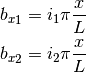
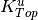
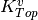
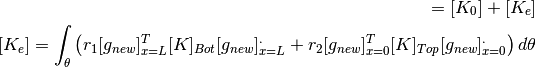
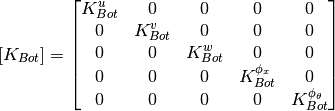
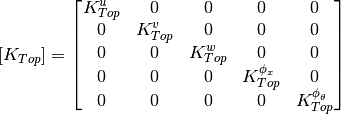
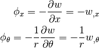
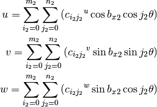

CLPT - Classical Laminated Plate Theory¶
Description¶
For the CLPT the displacement field components are:

And approximated as:

where  are the displacements of the shell mid-surface and
are the displacements of the shell mid-surface and
 and
and  the shell rotations along
the shell rotations along  and
and  following the right-hand rule. For the CLPT the rotations are defined as:
following the right-hand rule. For the CLPT the rotations are defined as:

For the ConeCyl implementations the displacement field is approximated
and the approximated functions can be separated as:

where  contains the approximation functions corresponding to the
prescribed degrees of freedom,
contains the approximation functions corresponding to the
prescribed degrees of freedom,  contains the functions independent
of and
contains the functions independent
of and  the functions that depend on both
and .
the functions that depend on both
and .
The aim is to have models capable of simulating the displacement field of cones and cylinders. The approximation functions are the same for both the Donnell’s and the Sanders’ models.
Models¶
Below it follows a more detailed description of each of the implementations:
- clpt_donnell_bc1
- clpt_donnell_bc2
- clpt_donnell_bc3
- clpt_donnell_bc4
- clpt_donnell_bcn
- clpt_sanders_bc1
- clpt_sanders_bc4
- clpt_sanders_bc2
Each model can be accessed using the linear_kinematics parameter of the
ConeCyl object. For linear static analysis the most general model is the
clpt_donnell_bcn.
For linear buckling analysis the following models should be used for each type of boundary conditions:
- SS1- or CC1-type: clpt_donnell_bc1 or clpt_sanders_bc1
- SS2- or CC2-type: clpt_donnell_bc2 or clpt_sanders_bc2
- SS3- or CC3-type: clpt_donnell_bc3 or clpt_sanders_bc3
- SS4- or CC4-type: clpt_donnell_bc4 or clpt_sanders_bc4
- Free edges: use the fsdt_donnell_bcn (CLPT not implemented)
clpt_donnell_bc1¶
SS1- and CC1-types of boundary conditions, or anything
in between by using elastic restrained edges in  and
and  .
The approximation functions are:
.
The approximation functions are:
![u = u_0 + \sum_{i_1=0}^{m_1} {c_{i_1}}^{u} \sin{{b_x}_1}
+ \sum_{i_2=0}^{m_2} \sum_{j_2=1}^{n_2} \left(
{c_{i_2 j_2}}_a^{u} \sin{{b_x}_2} \sin{j_2 \theta}
+{c_{i_2 j_2}}_b^{u} \sin{{b_x}_2} \cos{j_2 \theta}
\right)
\\
v = v_0 + \sum_{i_1=0}^{m_1} {c_{i_1}}^{v}\sin{{b_x}_1}
+ \sum_{i_2=0}^{m_2} \sum_{j_2=1}^{n_2} \left(
{c_{i_2 j_2}}_a^{v} \sin{{b_x}_2} \sin{j_2 \theta}
+{c_{i_2 j_2}}_b^{v} \sin{{b_x}_2} \cos{j_2 \theta}
\right)
\\
w = w_0 + \sum_{i_1=0}^{m_1} {c_{i_1}}^{w}\sin{{b_x}_1}
+ \sum_{i_2=0}^{m_2} \sum_{j_2=1}^{n_2} \left(
{c_{i_2 j_2}}_a^{w} \sin{{b_x}_2} \sin{j_2 \theta}
+{c_{i_2 j_2}}_b^{w} \sin{{b_x}_2} \cos{j_2 \theta}
\right)](../../_images/math/75f2f3527bedee6011711b2a38d1777611a2ce6e.png)
with:

The following general form of elastic constraints at the edges is used:

Note that the stiffnesses: ,  and  are not
used in clpt_donnell_bc1, but since they are required in other
implementations, it is convenient to present the general form using
all the elastic terms.
are not
used in clpt_donnell_bc1, but since they are required in other
implementations, it is convenient to present the general form using
all the elastic terms.
The equation for  can be written in matrix form, and it will
result in an additional term
can be written in matrix form, and it will
result in an additional term ![[K_e]](../../_images/math/409b0a257226a357b1bb7bf639683dc8fc2603e9.png) to the linear stiffness matrix
to the linear stiffness matrix
![[K_0]](../../_images/math/ca28b2833c10991ea042899048cb950e3b10a235.png) . The new stiffness matrix with the elastic constraints at the edges
(
. The new stiffness matrix with the elastic constraints at the edges
(![[{K_0}_e]](../../_images/math/c6de216c93e36b3751ba5ea7621c376022e01e28.png) ) becomes:
) becomes:

with :

and:

and the shape functions ![[g_{new}]](../../_images/math/a59e3505316c1f877e51efb5e6fbf2a6718e9b69.png) contains two extra rows that are built
from the relations:
contains two extra rows that are built
from the relations:

and therefore:
![[g^{\phi_x}] = - \frac {\partial [g^w]} {\partial x} \\
[g^{\phi_\theta}] = - \frac 1 r \frac {\partial [g^w]} {\partial \theta} \\
[g_{new}]^T = \left[ [g^u], [g^v], [g^w],
[g^{\phi_x}], [g^{\phi_\theta}] \right]](../../_images/math/6636d72b4ea82b4ce6fe411bc73e5eccdea4ac23.png)
Observations:
linear buckling implemented
clpt_donnell_bc2¶
Planned to simulate the SS2- and CC2-types of boundary conditions (or anything
in between). The flexibily in  is removed if compared to the
clpt_donnell_bc4. Giving:
is removed if compared to the
clpt_donnell_bc4. Giving:
![u = u_0 + \sum_{i_1=0}^{m_1} {c_{i_1}}^{u} \sin{{b_x}_1}
+ \sum_{i_2=0}^{m_2} \sum_{j_2=1}^{n_2} \left(
{c_{i_2 j_2}}_a^{u} \cos{{b_x}_2} \sin{j_2 \theta}
+{c_{i_2 j_2}}_b^{u} \cos{{b_x}_2} \cos{j_2 \theta}
\right)
\\
v = v_0 + \sum_{i_1=0}^{m_1} {c_{i_1}}^{v}\sin{{b_x}_1}
+ \sum_{i_2=0}^{m_2} \sum_{j_2=1}^{n_2} \left(
{c_{i_2 j_2}}_a^{v} \sin{{b_x}_2} \sin{j_2 \theta}
+{c_{i_2 j_2}}_b^{v} \sin{{b_x}_2} \cos{j_2 \theta}
\right)
\\
w = w_0 + \sum_{i_1=0}^{m_1} {c_{i_1}}^{w}\sin{{b_x}_1}
+ \sum_{i_2=0}^{m_2} \sum_{j_2=1}^{n_2} \left(
{c_{i_2 j_2}}_a^{w} \sin{{b_x}_2} \sin{j_2 \theta}
+{c_{i_2 j_2}}_b^{w} \sin{{b_x}_2} \cos{j_2 \theta}
\right)
\\](../../_images/math/ad3baa2c1af5e4fb656de36752f70fa49d03353a.png)
The linear stiffness matrix is changed using the same
elastic contraints used for the clpt_donnell_bc1.
Observations:
clpt_donnell_bc3¶
Planned for SS3- and CC3-types of boundary conditions (or anything in between). The approximation functions are:
![u = u_0 + \sum_{i_1=0}^{m_1} {c_{i_1}}^{u} \sin{{b_x}_1}
+ \sum_{i_2=0}^{m_2} \sum_{j_2=1}^{n_2} \left(
{c_{i_2 j_2}}_a^{u} \sin{{b_x}_2} \sin{j_2 \theta}
+{c_{i_2 j_2}}_b^{u} \sin{{b_x}_2} \cos{j_2 \theta}
\right)
\\
v = v_0 + \sum_{i_1=0}^{m_1} {c_{i_1}}^{v}\sin{{b_x}_1}
+ \sum_{i_2=0}^{m_2} \sum_{j_2=1}^{n_2} \left(
{c_{i_2 j_2}}_a^{v} \cos{{b_x}_2} \sin{j_2 \theta}
+{c_{i_2 j_2}}_b^{v} \cos{{b_x}_2} \cos{j_2 \theta}
\right)
\\
w = w_0 + \sum_{i_1=0}^{m_1} {c_{i_1}}^{w}\sin{{b_x}_1}
+ \sum_{i_2=0}^{m_2} \sum_{j_2=1}^{n_2} \left(
{c_{i_2 j_2}}_a^{w} \sin{{b_x}_2} \sin{j_2 \theta}
+{c_{i_2 j_2}}_b^{w} \sin{{b_x}_2} \cos{j_2 \theta}
\right)
\\](../../_images/math/6be294f2cf6c68cb2bfbef451ad674972f278f00.png)
The linear stiffness matrix is changed using the same
elastic contraints used for the clpt_donnell_bc1.
Observations:
clpt_donnell_bc4¶
SS4- or CC4-types of boundary conditions (or anything in between).
![u = u_0 + \sum_{i_1=0}^{m_1} {c_{i_1}}^{u} \sin{{b_x}_1}
+ \sum_{i_2=0}^{m_2} \sum_{j_2=1}^{n_2} \left(
{c_{i_2 j_2}}_a^{u} \cos{{b_x}_2} \sin{j_2 \theta}
+{c_{i_2 j_2}}_b^{u} \cos{{b_x}_2} \cos{j_2 \theta}
\right)
\\
v = v_0 + \sum_{i_1=0}^{m_1} {c_{i_1}}^{v}\sin{{b_x}_1}
+ \sum_{i_2=0}^{m_2} \sum_{j_2=1}^{n_2} \left(
{c_{i_2 j_2}}_a^{v} \cos{{b_x}_2} \sin{j_2 \theta}
+{c_{i_2 j_2}}_b^{v} \cos{{b_x}_2} \cos{j_2 \theta}
\right)
\\
w = w_0 + \sum_{i_1=0}^{m_1} {c_{i_1}}^{w}\sin{{b_x}_1}
+ \sum_{i_2=0}^{m_2} \sum_{j_2=1}^{n_2} \left(
{c_{i_2 j_2}}_a^{w} \sin{{b_x}_2} \sin{j_2 \theta}
+{c_{i_2 j_2}}_b^{w} \sin{{b_x}_2} \cos{j_2 \theta}
\right)
\\](../../_images/math/9a98366261b12b8f384b2129c1990fcad17bcbaa.png)
The linear stiffness matrix is changed using the same
elastic contraints used for the clpt_donnell_bc1.
Observations:
clpt_donnell_bcn¶
General approximation function for the CLPT. It allows any type of boundary condition by setting the proper values for the elastic constants.
![u = u_0 + \sum_{i_1=0}^{m_1} {c_{i_1}}^{u} \sin{{b_x}_1}
+ \sum_{i_2=0}^{m_2} \sum_{j_2=1}^{n_2} \left(
{c_{i_2 j_2}}_a^{u} \cos{{b_x}_2} \sin{j_2 \theta}
+{c_{i_2 j_2}}_b^{u} \cos{{b_x}_2} \cos{j_2 \theta}
\right)
\\
v = v_0 + \sum_{i_1=0}^{m_1} {c_{i_1}}^{v}\sin{{b_x}_1}
+ \sum_{i_2=0}^{m_2} \sum_{j_2=1}^{n_2} \left(
{c_{i_2 j_2}}_a^{v} \cos{{b_x}_2} \sin{j_2 \theta}
+{c_{i_2 j_2}}_b^{v} \cos{{b_x}_2} \cos{j_2 \theta}
\right)
\\
w = w_0 + \sum_{i_1=0}^{m_1} {c_{i_1}}^{w}\sin{{b_x}_1}
+ \sum_{i_2=0}^{m_2} \sum_{j_2=1}^{n_2} \left(
{c_{i_2 j_2}}_a^{w} \sin{{b_x}_2} \sin{j_2 \theta}
+{c_{i_2 j_2}}_b^{w} \sin{{b_x}_2} \cos{j_2 \theta}
+{c_{i_2 j_2}}_c^{w} \cos{{b_x}_2} \sin{j_2 \theta}
+{c_{i_2 j_2}}_d^{w} \cos{{b_x}_2} \cos{j_2 \theta}
\right)](../../_images/math/48117bce72c3acee29fdf938b7d3e0747ce4d14b.png)
The linear stiffness matrix is changed using the same
elastic contraints used for the clpt_donnell_bc1.
Observations:
not working for linear buckling
non-linear analysis not implemented
clpt_sanders_bc1¶
Counterpart of clpt_donnell_bc1 using the Sanders non-linear equations.
Observations:
clpt_sanders_bc2¶
Counterpart of clpt_donnell_bc2 using the Sanders non-linear equations.
Observations:
clpt_sanders_bc3¶
Counterpart of clpt_donnell_bc3 using the Sanders non-linear equations.
Observations:
clpt_sanders_bc4¶
Counterpart of clpt_donnell_bc4 using the Sanders non-linear equations.
Observations:
clpt_geier1997_bc2¶
Note
NOT RECOMMENDED, implemented for comparative purposes only.
Analogous to the model published by Geier and Singh (1997) (see [geier1997] for more details) for the SS2- and CC2-types of boundary condition. Originally proposed by Khdeir et al. (1989) (see [khdeir1989]). Uses the Donnell’s equations and the approximation functions are:

Observations: